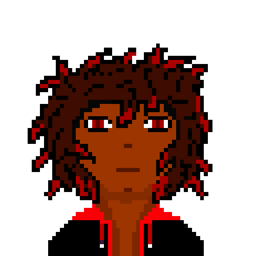

Atributos de combate são únicos e podem ser mudados durante testes, perseguições e lutas. Sendo distribuídos para cada classe pontos que definem as estatísticas abaixo.
Vida:Tendo como seu máximo de distribuição
20 pontos. Vida nada mais é o quanto de dano que
o jogador poderá sofrer até vir a óbito. A vida
também está atrelada a efeitos e o mental. Alguns
exemplos de efeitos como sangramento, envenenamento
afetam este atributo, assim como o mental caso
chegue a 0 pode matar o personagem.
Defesa:TTendo como seu máximo de
distribuição 10 pontos. Defesa é o atributo
que estabelece resistência a dano independente
da categoria de ataque (Ritual, Corpo-Corpo,
Arremesso, Armas). Este atributo está atrelado
a seguinte perícias: fortitude.
Força:Tendo como seu máximo de distribuição
10 pontos. Força é o atributo que será utilizado
em testes para dar dano ao adversário dentro das
categorias de ataque (Ritual, Corpo-Corpo,
Arremesso, Armas) e/ou fazer ações que exijam
esforço físico. Este atributo será utilizado
nas seguintes perícias: Arremesso, corpo-corpo,
armas.
Mental:Todos os personagens tem como
seu limite máximo mental de 100%, entretanto
só é possível chegar com bônus. Seu mental
máximo é baseado no seguinte cálculo: 100% -
(Ritual - Inspiração)
Mental é o atributo responsável
por sua sanidade e nível de exposição
ao surreal/místico/ divino. Quanto mais
mental é perdido, mais suas ações podem se
deteriorar, podendo lhe causar certos
transtornos ou até a morte. Os níveis de mental
serão descritos em outro momento do site. Este
atributo será utilizado nas seguintes perícias:
Ritual, inspiração.
Carga:Seria o quanto o
personagem aguenta carregar de itens e
sua resistência ao efeito de atordoar.
Este atributo baseia-se na soma de vida e
força dividido por 2.
Traços
Destreza: É o quão atlético e furtivo
seu personagem é em relação aos ambientes e
inimigos do universo apresentado. Este atributo
é baseado pela média de suas perícias e será
utilizado para o teste de combate em inimigos da
categoria pequeno/médio e aumentar seu nível em
alguma perícia desta categoria, sendo elas a
seguintes: esquiva, furtividade, escalar,
corrida, controle de respiração
Conhecimento:Se relaciona ao saber
do universo que o seu personagem vive e ao
que ele se relaciona à arte, religião, busca
de recursos. Este atributo é baseado pela
média de suas perícias e será utilizado para
testes caso o jogador queira descobrir alguma
informação de monstro ou melhorar alguma perícia
desta categoria, sendo elas as seguintes: arte e
ofícios, encontrar, navegação, antropologia.
Carisma:: A forma de relacionamento que
você vai adotar aos personagens do universo
conforme a situação. Este atributo é baseado
pela média de suas perícias desta categoria sendo
elas as seguintes: charme, intimidação, lábia.
Perícias são testes que o jogador pode realizar para fazer
certas
ações durante seu turno independente da situação.
Todas as ações são divididas entre os atributos do
personagem e as perícias que são
estabelecidas conforme os pontos de nação ou
resultados no dado.
Para você aprender ou adquirir algo será
necessário estar naquele nível de
especialização em sua porcentagem geral de um
atributo. Por exemplo: Foi encontrado uma erva medicinal,
será necessário descobrir o nível de especialização e
então se é possível utilizá-la em um teste de medicina.
Caso sua categoria for abaixo será necessário aprender
novas coisas dentro das suas perícias para que possa
chegar ao nível necessário.
Nesta parte da página você descobrirá o que
cada perícia faz e os níveis de especialização.
Os testes serão falados nas próximas sessões.
Como definir seu nível de perícia:
Nação que nasceu: certas nações já têm um
certo privilégio em certas perícias pelo
local que vivem e suas atividades, estará
especificado quando esse cálculo será utilizado.
2d6 * pontos de perícia por nação
(conhecimento da nação envolta daquele
aspecto, sendo classificado de 1-6)
Níveis de especialização:
Azul
Roxo
Laranja
Vermelho
Prisma
1 - 30%
31 - 52%
53 - 74%
75 - 89%
90+
Perícias: combate
Arremesso:São ações para quando o
jogador queira arremessar armas,
utensílios, objetos para atrair
(fazendo som) um inimigo ou em combate.
2D6 * 6
Corpo – Corpo: São ações exclusivas
para o combate numa luta utilizando apenas
socos e chutes (mesmo sendo fortalecidos por
algo, não sendo armas de mão)
Pontos de nação: Igneo: 5| Aureo: 3| Nômade: 4
Armas:Esta perícia é para personagens que escolheram usar alguma arma.
Aumentando seu atributo de força dependendo do status da arma, entretanto o teste dessa
perícia mostrará se você é ou não eficaz com a arma podendo gerar debuffs conforme seu
nível de especialização. Para ativar qualquer efeito de uma arma jogue uma moeda e
logo após o inimigo (caso tenha) faça um teste de fortitude
Pontos de nação: Igneo: 1| Aureo: 2| Nômade: 6
Perícias: resistência
Fortitude:Usado para resistências a
efeitos/causas como, envenenamentos,
sangramentos etc. Esta perícia não tem
pontos de nação, logo obter sua média jogue
um 2D6 * 6
Perícias: conhecimento
Arte e ofícios: Esta perícia
fornece ao jogador informações sobre itens,
formas de falsificação e conserto do item.
Utilizado principalmente por jogadores da
tribo de arte para efetuar suas artes
rúnicas.
Pontos de nação: Igneo: 3| Aureo: 6| Nômade: 4
Encontrar: Fornecer testes para
encontrar pistas e itens.
Pontos de nação igualitários,
2D6 * 6
Navegação: Fornece testes
para marcar locais,
rotas de inimigos e
descobrir passagens.
Pontos de nação igualitários, 2D6 * 6
Antropologia:Habilita o
usuário a identificar e entender o
modo de vida de um indivíduo através
da observação. Se o usuário dessa perícia
observa outra cultura por algum tempo,
estando imerso nela ou utilizando
registros precisos sobre uma cultura
extinta, então previsões simples podem
ser feitas sobre os costumes e a moral
de tal cultura, mesmo que as evidências
possam estar incompletas.
Pontos de nação: Igneo: 4| Aureo: 4| Nômade: 6
Medicina: Está atrelado tanto a algo cientifico
quanto algo que remete ao misticismo. É possível criar
curas com ervas e itens encontrados pelo mapa, também a
possibilidade de descobrir se algum item pode trazer
algum efeito/causa.
Pontos de nação: Igneo: 2| Aureo: 4| Nômade: 3
Perícias: movimentação
Esquiva:Permite desviar de ataques,
investidas conforme sua taxa de movimento.
2D6 * 6
Furtividade:Permite se esgueirar por
locais sem ser percebido, contudo,
sua taxa de movimento diminui, conforme
aprimora essa perícia esse debuff pode
desaparecer (a partir do nível vermelho). 2D6 * 6
Escalar:Permite subir em locais e
quanto maior o nível da perícia mais
chance de escalar locais difíceis.
2D6 * 6
Corrida:Aumenta sua taxa de
movimento, contudo é totalmente exposto
ao inimigo. 2D6 * 6
Controle de respiração: Melhor forma
de se esconder de um inimigo que se
aproxima em situações de cerco
ou exposição. Também lhe dará opção
de realizar mais testes de perícias –
destreza. 2D6 * 6
Perícias: mentalidade
Ritual:Permite ao jogador efetuar rituais
independente da área ou se prevenir de um.
Isso faz perder um turno caso esteja em combate.
Quanto mais usar certo ritual menos serão suas
punições, mas depende do quão insano esteja seu
personagem.
Pontos de nação: Igneo: 6| Aureo: 3| Nômade: 3
Inspiração: Permite o jogador a
inspirar o resto do time dando lhes
mais chance de efetuar suas ações,
entretanto essa perícia só pode ser usada
se seu mental estiver bom. 2D6 * 6
Perícias: RIZZ
Lábia:Lhe dá o poder da enganação,
pode tanto convencer alguém ou mentir
quanto interpretar as verdadeiras
intenções do outro. 2D6 * 6
Intimidação:Dá ao jogador a
habilidade de amedrontar o inimigo,
fazendo o desistir de certa ação ou
atribui-lo uma ação. 2D6 * 6
Charme: Dá ao jogador a
habilidade de flerte, dependendo do
quão abaixo seja o mental do outro
pode encantá-lo e atribuir uma ação.
2D6 * 6
D6 – Definir a porcentagem das perícias, bônus e punições.
D100(dois d10) – Será utilizado para todos os testes
de perícias, sendo necessário atingir a porcentagem
definida no teste para obter sucesso naquilo que deseja.
D20 – Será utilizado para punições em testes, bônus, punições e movimentação
D10 – Qual punição mental você receberá, bônus, punições e movimentação
Moeda – Este item será utilizado para decidir
se o jogador poderá pedir informação de algum status
do inimigo e logo após jogar um teste de conhecimento ou nas ações de punição e bônus.
Isso só ocorrerá caso tire cara
Em locais sem perigos iminentes não há
necessidade de testes, mesmo sendo uma passagem desconhecida.
Perseguições: Para esse aspecto seguirá na frente
aqueles que tiverem mais destreza (a possibilidade de
outra pessoa estar na área de saída antes de outros com
mais destreza, dando os primeiros turnos a ele).
Tem a possibilidade de esquivar, escalar, correr nessas
situações. Será feito um teste de destreza com um d10 ou
um d20 para determinar quantos passos o jogador dará,
sendo necessário sempre um teste de controle de
respiração para ver se terá punição. O local para
despistar(nem sempre será assim) também terá um número
determinado de passos.
São punições causadas por ataques, rituais,
condições do ambiente, entre outras coisas.
Esses efeitos podem ser remediados por poções,
ervas conforme sua perícia medicina e curadas
pelo mesmo. Se não houver nenhuma prevenção e
ocorra de obter uma punição será jogado um teste
conforme a punição, sendo normalmente a fortitude
que irá definir.
Sangramento:cortes graves podem causar esse efeito e
irá se agravando com o passar do tempo sempre iniciando
com o dano de 1 e multiplicando por 2, dura 5 rounds.
Se o jogador/inimigo/monstro ter regeneração de vida
maior que o sangramento, ele se cura mas reduz a cura
dependendo quantidade de sangramento, caso o sangramento
seja maior anula a cura e da o dano a mais.
Envenenamento: consumir algo sem conhecer ou colocar
veneno independente do meio lhe causará dois tipos de
efeitos, náusea e um dano fixo dependendo da força do veneno
sendo o nível mais forte 1 de dano, você pode stackar até 3
e serão 3 rounds (isso não acumula).
Náusea:piora as porcentagens das perícias.
Pode ser causado por ingerir alguma comida
ou ataque mental.
Queimadura: condições de ambientes/ataques de
fogo(pegou uma tocha e bateu, uma bola de fogo),
se falhar no teste de fortitude jogador/inimigo
toma 2 de dano por 2 rounds (esse efeito não acumula)
Atordoar: pode ser gerado por rituais e certos
objetos definidos pelo mestre quando lançados
ao jogador/inimigo que sejam maiores que sua carga base.
Penetração de armadura: Se bem sucedido em
todas as etapas de combate e seu inimigo tem defesa maior que
força(mesmo com as aplicações de bônus), ele joga uma
moeda se cair cara da o dano por completo se cair coroa
da a metade da força base.
Enraizar: efeito de enraizamento pode ser
causado por ambiente (imagine-se em uma floresta
e ao estar correndo você falha no teste e se
prende em uma trepadeira) ou rituais ou alguns
efeitos mentais podem imobilizar o personagem os
impedindo de se mexer até que saia do efeito.
A retirada desse efeito será decidida por um teste
conforme o que te prendeu, como no exemplo da trepadeira
seria necessário teste de destreza para se desenrolar
ou um de armas caso tenha algo cortante.
Congelamento: sua movimentação cai pela metade e após 3 turnos
fica enraizado. Se
seu personagem é da tribo de sangue o tempo para enraizar
é 1 turno após a aplicação do efeito.
Fobia:Parecido com a paranoia,
o personagem começa a imaginar viver
seu pior medo, podendo matá-lo. Causado pelo
contato com um de seus medos ou forçado por algum
inimigo que brinque com a mente.
Possessão:Uma entidade se apossa de seu corpo
por meio de ritual ou itens corrompidos, sendo
necessário fazer um trato para saber se conseguirá
conseguir conquistar o poder da entidade ou perder o
controle total de seu corpo
Para cada acerto de perícia ou hit kill ou uma boa ideia de
RP na qual o mestre goste, você ganha pontos de bônus
ao chegar a 5 pontos (sujeito a mudança) você pode trocar
por um dos tipos abaixo, com exceção do monstro grande.
Errando perícias, ataques, movimentos, carisma, o jogador
também acumula pontos de punição, máximo de 5
(sujeito a mudança), jogue um d6 para ver qual punição
receberá sendo 1-2 movimentação, 3-4 ataque, 5-6 perícia .
Bônus/punição movimentação
Como bônus: jogue uma moeda se cair cara receba um d6
como bônus de passo, coroa d10.
Como punição: o mestre jogará uma moeda se
cair cara receba uma punição de um d10, coroa
uma punição de d20.
Bônus/punição de ataque
Como bônus: jogue uma moeda se cair cara receba um d6
como bônus na força base, coroa d10 tem direito a penetração de armadura.
Como punição: o mestre jogará um d6 que diminuirá
sua força base.
Bônus/punição de perícia
Como bônus: Escolha um dado que ajude a
chegar na sua porcentagem, seja diminuindo o
valor ou somando.
Como punição: O mestre escolhe um dado que
piora sua porcentagem, seja diminuindo o valor
ou somando.
Situações nunca vista, fobias,
encontro com cadáveres em uma situação anormal
para a realidade, a escuridão etc.
podem te diminuir seu mental e causar um efeito
dentro das 4 camadas: raiva, escuridão, paranoia e
insanidade.
Faça um teste de inspiração e jogue um d20 como punição
Sendo o d20 tendo seu funcionamento da seguinte forma:
1-5 perda total, falha no teste
6-10 o número que caiu no d20 e acrescenta no teste de inspiração
11-15 refaz o teste de inspiração, se acertar recupera, se não perde
16-20 recupera a sanidade
Para descobrir o quanto ganha ou perde o mestre jogará um d10
Caso caia 1 ou 20 tem um bônus ou punição de um d6
Raiva
1:Tem vontade de causar dano a si ou a
alguém próximo
2:Seu sangue começa a ferver,
se cortar para se esfriar parece bom
Paranoia
3:Para onde você olha vê coisas
desagradáveis e seus olhos começam a arder,
você sente à vontade constante de arrancá-los
4:Falar é impossível. Você sente que tem alguém
sempre te escutando e tem medo disso
5:Quando você olha para alguém, a imagem é
distorcida que te
relembram cenas perturbadores
Insanidade
6:Você não acredita em mais nada.
A partir de agora quem controla é o mestre
7:Sente como se insetos estivesse
em suas entranhas e precisa
tirá-los de alguma forma
Combates serão definidos de 2 formas
Monstros pequenos/médios e humanos - Terão os
status igualmente definidos aos dos players,
assim o combate será feito com base no estilo
de combate escolhido sendo 4 os disponíveis
Armas, Corpo-Corpo, Ritual e Arremesso.
Sendo que certas armas serão necessárias para
um teste dentro de Corpo-Corpo ou Arremesso.
Acerte a perícia, dê seu dano base - defesa
inimiga, caso a defesa do inimigo seja maior
que seu dano, faça um teste de destreza se
acertado cause o efeito de penetração.
Se falhar perde um turno.
Monstros grandes - Pelos status serem
maiores o sistema acima funciona mas
com bônus de um d10 e o sistema de
penetração de armadura sempre será
ativo não sendo necessário o teste de destreza
São eventos fora do universo que os personagens
vivem, como uma graça/benção para ajudar os
jogadores que gostem de explorar os ambientes
como recompensa, algumas descobertas ou que
passaram por perto
Alguns eventos do mestre podem ser
forçados com o jogar de uma moeda
Teste de resistência:carregar um número grande de
itens durante uma parte da lore ou precisar levantar
um objeto que está obstruindo a passagem com um peso
que será definido o jogador que decidir aceitar o evento
ou for posto sem condição de negar somará à sua força com
a carga e assim descobrir se pode ou não carregar.
Poções misteriosas: prateleiras com poções
com rótulos desconhecidos que podem te dar um algum
efeito
Julgamento:sentar-se em algum local pode
convocar um espírito da igreja de Morke que julgará
seu pecado como veracidade, podendo tirar ou
receber algo
Poço da sorte:retirar o sangue de um animal e
levá-lo a um poço pode te fazer recuperar sua vida
ou te matar
Cidade do silêncio:caso haja um monstro no
local e seja necessário se esconder ou não fazer
barulho, os jogadores terão até 5 níveis de
exposição, sendo necessário um teste de furtividade
e controle de respiração em cada rodada até o
monstro se afastar. Para cada erro mais o nível
aumenta e mais tempo o monstro permanece
Cidade congelada:Este efeito será aplicado a locais gelados e será imposto por um d6 em quantos rounds os
jogadores devem procurar um local para se aquecer, caso contrário congelaram e
para cada congelamento um d6 será jogado para atribuir dano no jogador e inimigos.
Esta classe não aumentará seu atributo de vida
e não irá se curar a cada combate. A partir de
agora esse extra (sendo 20 para marca de Defesa e
15 para marca de Ataque) poderá ser usado como
cura ou para realização do ritual sem dar dano ao
personagem.
Para reabastecimento desse extra
(que se chamará estoque de sangue),
existirá as seguintes formas, sendo que
cada uma terá punições
Consumo de carne animal: Pode consumir carne ou
coletar o sangue da carne de animais. Nos dois
casos é necessário fazer um teste de medicina
para descobrir se a alguma possibilidade de
contrair alguma doença que afete sua vida e para
saber quanto de sangue poderá coletar
Consumo de carne humana: Pode consumir ou
coletar o sangue. Sendo necessário fazer teste
de medicina e de mental, pois a cada consumo de
carne humana seu mental pode abaixar e te tornar
um canibal, podendo tornar insaciável a vontade de
comer e podendo atacar seu grupo.
Pontos de distribuição da classe sangue:
19 pontos para distribuir entre vida, defesa e força
Arte:
Pontos de distribuição da classe arte:
22 pontos para distribuição entre vida, defesa e força
Exploradores:
Pontos de distribuição da classe exploradores:
23 pontos para distribuição entre vida, defesa e força
Darc
Arte rúnica:
arte e ofício + ritual, lanterna não tem mais o
efeito de melhorar sua sanidade, entretanto
fazer essa arte não abaixa sua sanidade
Thomas
Transmutação:
Não será mais permitido a tentativa de uma
transmutação que falhou na mesma batalha. Sendo assim
o demônio
controlará seu corpo por uma rodada. Para fazer a
transmutação Será necessario teste de conhecimento +
ritual para utilização deste ataque
MLK
Mordida:
Você troca uma parte de sua defesa por ataque, entretanto quanto mais tempo fica sem a máscara, seu mental decai. Exemplo: 1 de mental para cada rodada sem a máscara
Troca toda sua defesa para um possível hitkill, mas seu mental cai para 2, vida diminui pela metade e fica incapaz de fazer ritual para as próximas 2 lutas
Sem fraqueza: Resistencia do sangue
Esse ritual lhe permite ter resistência passiva
(não precisa fazer teste para ativá-la) a veneno
e frio. Pode passar a um aliado contudo
será necessário perder 2 de vida e um
teste de ritual
Defesa absoluta: Manipulação de sangue
Esse ritual permite o ganho de 3 de defesa por
2 de vida (seja vida ou estoque de sangue).
Tem a permissão de dar o mesmo de defesa para um
aliado se bem-sucedido em um teste de ritual
Ryan

Fortificação: Manipulação de sangue
Permite ao usuário o ganho de 3 de força por
2 de vida (seja vida ou estoque de sangue).
Imbuir: Manipulação de sangue
Permite ao usuário atribuir sangue a um objeto,
sendo necessário um teste de pericia ao que o objeto está sendo atribuído + 2 de
vida (seja vida ou estoque de sangue).
Agora que você como jogador sabe como funciona as
perícias, atributos e os outros efeitos do jogo,
está na hora de rolar os dados e decretar seu personagem
juntamente com o mestre, baseando-se na nação escolhida e
como seu personagem se comporta.
Como citado anteriormente, Conhecimento, Combate,
Destreza, Charme recebem porcentagens referente a
média das perícias que as equivalem.
Sabendo disso, rode os dados no sistema do site e
faça o restante da conta conforme foi mostrado na
área de perícias, essas serão suas porcentagem base,
na qual poderão ser redistribuídas. Por exemplo:
Arremesso - 25% | Corpo-Corpo: 55% | Armas: 10% |
Total: 90%
De acordo com o personagem que você jogador que
poderá redistribuir esses 90% dentro dessas 3 perícias,
entretanto saiba que o mestre pode diminuir esse total
para ficar condizente ao estado atual do seu personagem.